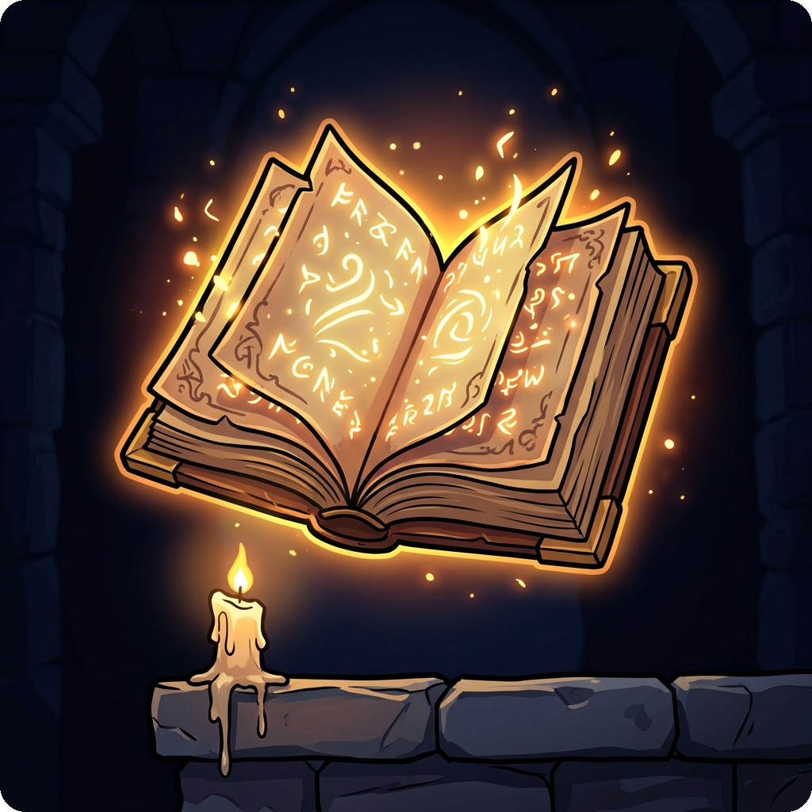
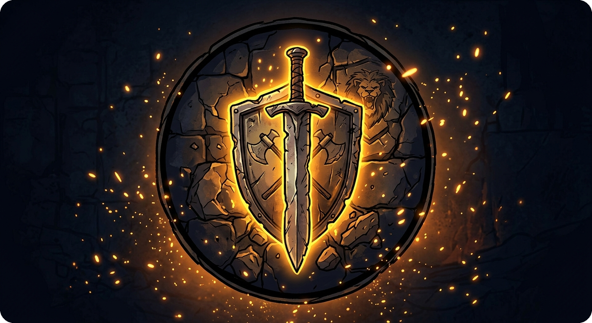
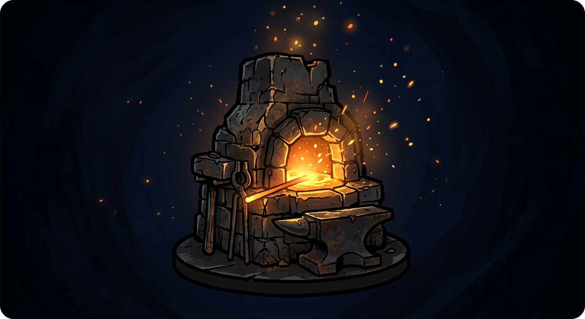
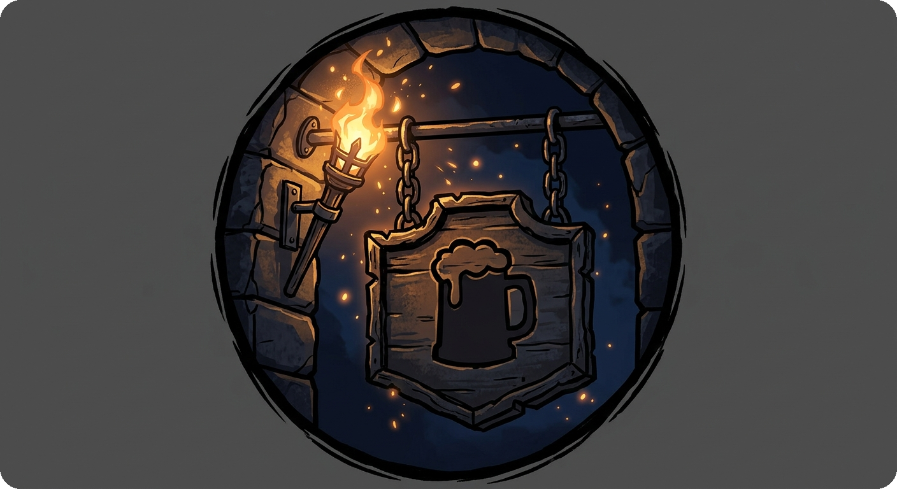
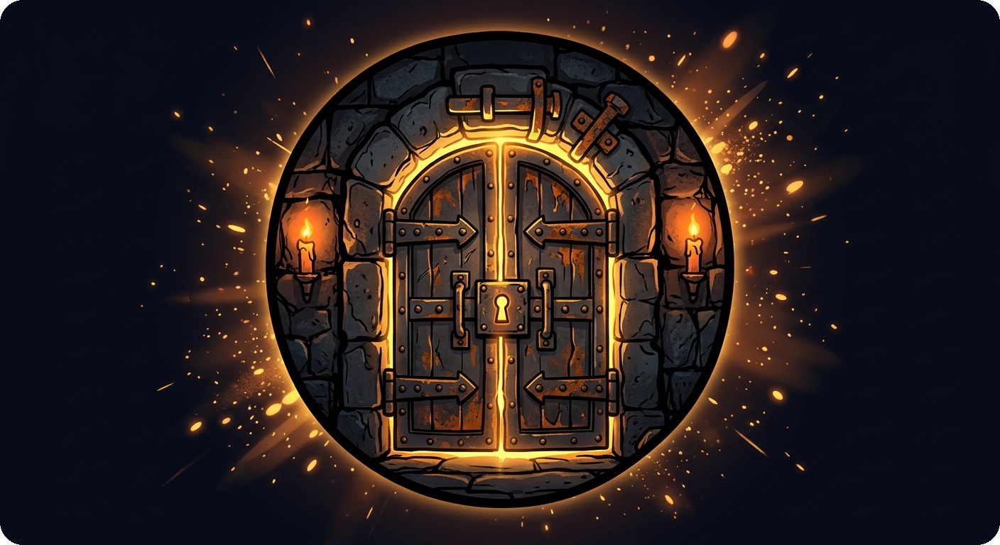
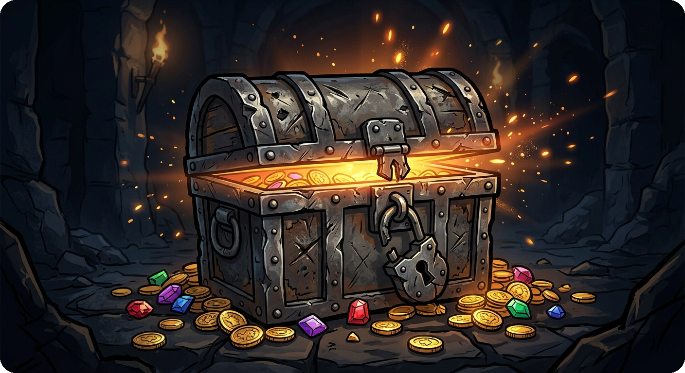

Variation D — Diablo Dark Isometric
Six zone hotspots on an atmospheric dark town map. Hover a building to reveal its name and purpose.
9:41
●●●●● 5G ▮▮
Harrogath
4,820
Arcane Library
Study ancient tomes · unlock new skills

Arcane Library
Guild Hall
Hire companions · manage your party

Guild Hall
Forge
Craft and upgrade weapons & armor

Forge
Tavern
Rest, recover · hear rumors of the land

Tavern
Vault
Secure your most precious treasures

Vault
Stash
Browse and organize your collection

Stash
Town
Map
Crew